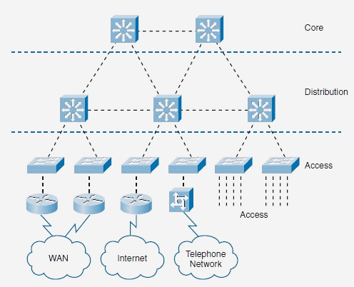

概述
在现代银行系统中，网络架构的设计至关重要，尤其是在处理大量数据和维护安全性方面。这种架构通常分为三层：接入层、汇聚层和核心层。接入层主要负责将终端用户设备连接到网络，并注重安全性和服务质量。汇聚层作为桥梁，处理更复杂的路由和交换决策，确保数据的高效流动。核心层则是网络的中心，处理高速数据传输和大量网络流量，对银行的关键业务数据和交易处理至关重要。每一层都采用特定的交换机和技术来满足其功能需求，确保整个网络的高效和安全运行。

接入层（Access Layer）
接入层是网络的最外层，主要负责将终端用户设备（如工作站、ATM机）连接到网络。这一层的关键特性包括：
- 提供大量端口以支持众多用户设备。
- 实施安全策略，如802.1X认证、端口安全。
- 支持QoS，确保关键应用的带宽需求。
- 支持PoE（电力供应），简化布线需求。
应用实例
银行的接入层连接员工工作站和ATM机，通过高密度交换机和安全认证技术确保数据安全和服务质量。
汇聚层（Distribution Layer）
汇聚层作为连接接入层和核心层的桥梁，其功能包括：
- 路由和交换决策。
- 实施网络策略，如访问控制和QoS。
- 提供网络的故障恢复和冗余功能。
应用实例
汇聚层通过高性能路由器和交换机管理银行各部门间的数据流动，确保数据高效和安全传输。
核心层（Core Layer）
核心层是网络架构的中心，负责高速数据传输和处理大量网络流量。其主要特点包括：
- 高速数据处理能力。
- 高度可靠性和稳定性。
- 支持大规模网络流量。
应用实例
银行的核心层包括连接到主数据中心的高端路由器和交换机，处理所有关键业务数据和金融交易。
结论
通过精巧地设计这三层，银行可以确保网络的高效运行和安全性。这不仅支持日常运营，还能处理高峰时段的大量金融交易。